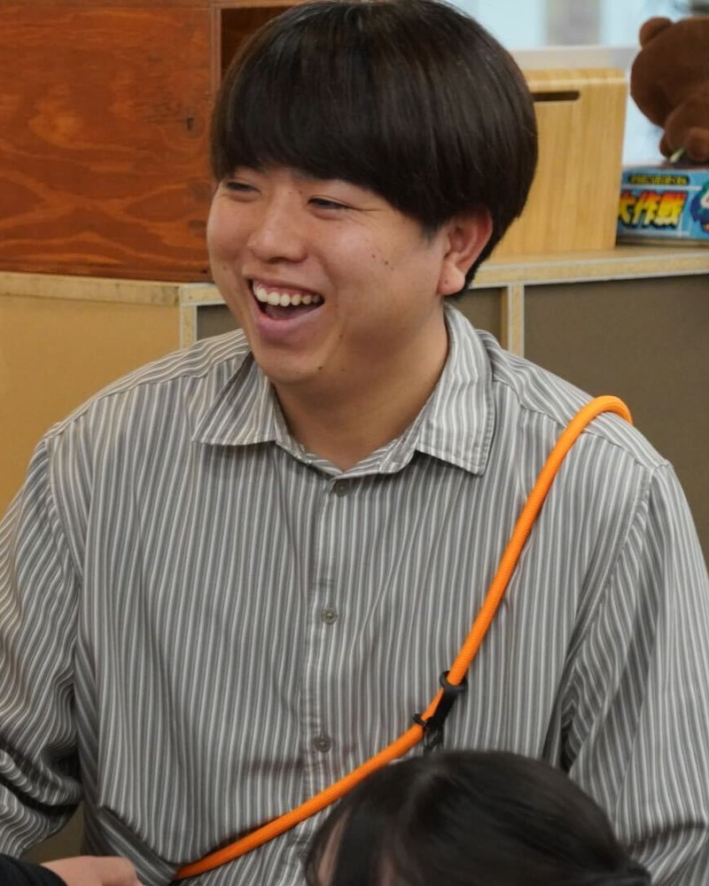

名刺と肩書きだけでは、足りない
地域に入った協力隊、独立したばかりの個人事業主。「何をしている人か」を、相手が初めて会う前に知れる場所がない。
EDIT YOUR ENTHUSIASM
名刺だけでは、あなたの熱は伝わらない。
対話で熱意を掘り出し、伝わる形に編集する。
協力隊・個人事業主のホームページ作成、伴走コーチング、中高生・就活生の探究ワークショップ。
こんなとき、声をかけてください
熱意はみんなが持っています。形がさまざまなだけ。それを社会の型に嵌める行為が、営業であり、進学であり、就活です。ひとりで自分を見つめるとズレが生じ、団体に合わせると自分が薄まる。だから、第三者が要ります。
地域に入った協力隊、独立したばかりの個人事業主。「何をしている人か」を、相手が初めて会う前に知れる場所がない。
モチベーションが保てない。好きなことは別にある気がする。でも、その「好き」を仕事や進路にどう繋げればいいかが見えない。
志望理由書もエントリーシートも、書けば書くほど借り物の言葉になる。自分の言葉で語るための材料が、まだ掘れていない。
私がやるのは、あなたが何を面白いと思い、何に感動し、何を軽蔑しているかを聞くこと。その価値観の出どころを一緒に辿り、構造として返すこと。答えは渡しません。出発点を渡します。
できること
料金は目安です。内容と期間によって変わるので、まず状況を聞かせてください。初回30分のヒアリングは無料です。
01 主軸
地域おこし協力隊・個人事業主・小さなお店やプロジェクトの方へ
テンプレートに情報を流し込むのではなく、まず対話であなたの熱意と言葉を掘り出します。対話の資格を持つ元エンジニアが、ヒアリングから設計・デザイン・実装・公開まで一人で担当。公開後は「言葉が変わったら、サイトも変える」伴走を続けられます。
15万円〜（税込）／制作一式
1万円〜／月 更新・伴走（任意）
ページ数・撮影・ドメイン取得などにより変動します。見積もりは無料です。
02
退屈している、やる気が出ない、次の一歩が見えない社会人・経営者・学生の方へ
熱は揺らぐものです。それを観測し、絶やさないための薪を焚べるのがコーチングだと考えています。ICF認定スクールで学んだ対話の技術を土台に、「そのモチベーションって、そもそも何？」から一緒に掘ります。1回で終わらず、継続の中で変化を見ます。
5,000円（税込）／初回体験60分
2万円〜／月 月2回コース
3か月単位での契約を基本としています。
03
推薦入試を控えた中高生、就活中の学生、その保護者・先生・支援者の方へ
「あなたの熱意はどこから来ている？」を、哲学対話の手法で掘る場です。志望理由書や自己分析を、借り物ではない自分の言葉で書けるようになることを目指します。学校・ユースセンター・塾などでのグループ実施と、個人向けの少人数実施の両方に対応します。
3万円〜（税込）／団体・1回
8,000円（税込）／個人・1名
18歳未満の方は、保護者の方からお申し込みください。
進め方
サイト作成でもコーチングでも、流れは同じです。作るものが変わるだけ。
下のフォームから、いまの状況をひとことで。30分のオンラインヒアリングを無料で行い、合いそうかをお互いに確かめます。
何が好きで、なぜ好きか。何が嫌で、なぜ嫌か。価値観の出どころを一緒に辿ります。ここが一番時間をかける工程です。
掘り出したものから、どこを見せて、どう見せるかを決めます。サイトならコンセプトとコピー、コーチングなら次の一歩の設計。
形にしてお渡しします。終着点は渡しません。その後も熱が揺らいだときに戻ってこられる場所として、続けて関わります。

プロフィール
熱意の編集者／コーチ／エンジニア
キャリアの出発点はITエンジニアでした。仕事は退屈で、タイパだけで動く日々。その退屈から逃れるために会社を辞め、個人として働く道を選びました。
転機は、批評ラジオやエッセイとの出会いです。自分の視野の狭さ、言語化の稚拙さを自覚し、「では何をすればいいか」を探る行為そのものが面白くなった。内省にハマり、ジャーナリングが続き、哲学対話の場に通うようになりました。
いまは山梨県韮崎市を拠点に、哲学対話のファシリテーション、地域の場づくり、コーチング、そしてサイト制作をしています。共通しているのは「その人の熱意を観測し、伝わる形に編集する」こと。夢中こそが退屈を救う、と信じています。
活動
哲学対話
韮崎の本の場「Yomu」で行ってきた哲学対話。「熱意ってそもそも何？」のような問いを、答えを急がずに皆で考える時間です。
コミュニティ
地域で働く人が、自分の熱を軸に自己紹介をする場。人前で自分を発することで熱が高まり、伝播していく瞬間に立ち会ってきました。
ローカル
韮崎を舞台にしたローカルプロジェクト。地域の人と一緒に、この街で暮らし働くことの面白さを探っています。
よくある質問
はい。むしろ、はっきりしていない状態からの対話が一番の得意分野です。「なんとなくサイトが要る気がする」「何かを変えたいが何かがわからない」で構いません。
できます。ヒアリング、コーチング、ワークショップはすべてオンラインで実施可能です。対面をご希望の場合は、山梨県内は伺えることが多く、県外は交通費をご相談させてください。
できるように作ります。更新方法のレクチャーを納品に含めています。「自分ではやりたくない」場合は、月額の更新・伴走プランで代わりに行います。
まず初回体験を受けていただき、合いそうであれば3か月（月2回・全6回）を一区切りとしています。熱は揺らぐものなので、1回で答えを出すより、揺らぎを一緒に観測する期間を大切にしています。
あります。工数に対して報酬が著しく見合わないもの、私が提供しているのはメンター的な伴走であって助言やケアだけを目的とするもの、政治団体・宗教団体・反社会的勢力に関わるものはお断りしています。合わないと感じた場合も、理由を添えて正直にお伝えします。
銀行振込を基本としています。サイト作成は着手時と納品時の2回払い、コーチングは月初の前払いです。キャンセル・返金の条件は特定商取引法に基づく表記に記載しています。
お問い合わせ・ご相談
2営業日以内に、西村本人から返信します。返信後、30分の無料オンラインヒアリングの日程を調整します。